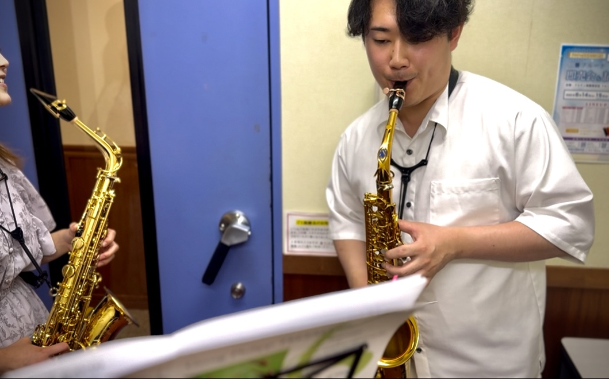

レッスン

フランス流と日本流、両方の良さを取り入れたサクソフォンレッスン
3年間のフランス留学経験を活かし、日本とフランス両国で大切にされている表現技法や音楽観を取り入れたレッスンを提供しています。特に「音色」の追求に重点を置き、サクソフォンの持つ木管楽器的な柔らかい音色の可能性を引き出す指導を行います。
初心者から上級者、音大受験生まで、レベルや目的に合わせた指導が可能です。一人ひとりの目標や個性に合わせたカリキュラムで、着実にステップアップしていきましょう。
レッスンの特徴
音色を重視した指導
力強さに加え、繊細で美しい音色を追求します。サクソフォン本来の豊かな音色を追求し、より洗練された響きを目指します。
音大受験対策
長年の経験に基づいた効果的な受験対策で、合格へと導きます。受験に必要な課題曲や練習方法を的確にアドバイスします。
フランス留学経験
留学経験から得た、フランス流の表現技法やニュアンスも取り入れながら丁寧に指導します。
個性を尊重
生徒さん一人ひとりの個性や目標を尊重し、それぞれに合った形での上達を目指します。同じ型にはめる指導はしません。
レッスンプラン
個人レッスン
10,000円/回（90分）
グループレッスン
5,000円/一人当たり（120分）
レッスン形式
対面レッスン
東京都内のスタジオにて対面でのレッスンを行っています。実際の音を聴きながら、より細かな表現や呼吸法などを直接指導できるメリットがあります。
場所: 東京都内（詳細はお申し込み時にご案内）
レッスンの流れ
-
1
お問い合わせ・相談
まずはお問い合わせフォームからご連絡ください。目標や希望、現在のレベルなどをお伺いします。
-
2
体験レッスン
実際のレッスンの雰囲気を知っていただくため、体験レッスン（5,000円/60分）をご用意しています。
-
3
定期レッスン開始
スケジュールを調整し、定期的なレッスンをスタートします。基本的には月2回以上の受講をおすすめしています。
よくある質問
初心者でも大丈夫ですか？
はい、もちろん大丈夫です。サクソフォンを初めて手にする方から指導いたします。楽器の扱い方や基本的な奏法から丁寧に教えていきますので、ご安心ください。
楽器を持っていないのですが…
まずは体験レッスンで楽器に触れてみることをおすすめします。楽器購入のアドバイスも行っております。
大人からの始めでも上達しますか？
もちろん上達します。大人の生徒さんは理解力が高く、効率よく練習できる場合が多いです。仕事や家事の合間に少しずつでも、継続することで確実に上達していきます。
どのくらいの頻度でレッスンを受けるべきですか？
上達を実感するためには、月に2回以上のレッスンをお勧めしています。ただし、ご予算やスケジュールに合わせて調整することも可能です。
レッスンのお申し込み・お問い合わせ
一人ひとりの目標や個性に合わせたレッスンで、サクソフォンの魅力を一緒に追求しましょう。
体験レッスンや詳細のお問い合わせは、以下のボタンからお願いいたします。